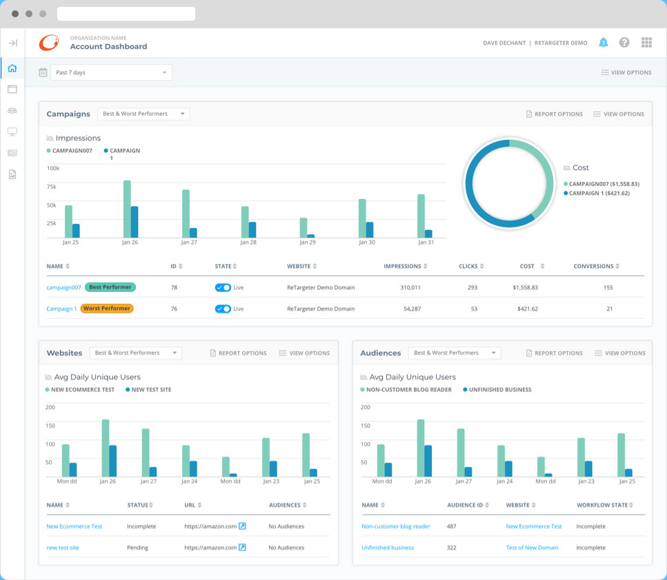

I think we can all agree that on any journey, a good set of flexible, reusable tools will take you a long way.
When I began with ConversionPoint Technologies, we had several products that utilized very different design patterns, color schemes and styles. We needed to find a way to unify them and create a more efficient product building solution for our teams.
After meeting with department leaders, developers, and others, I began work to see how we could build a design system that unified our efforts from design to development.
One my first efforts was creating an ecosystem map of how the current set of products flowed together, and how users interacted with them along the process.
Product & Customer Ecosystem for GERTY products
After interviewing current product users and company stakeholders to better understand the products and their value, I developed personas to help our team better empathize and fall back on who we were designing for.
Personas based on user research of GERTY products
Now that we had a good understanding of what we were working with and who would use it, I did an audit of our current product's components and capabilities. This allowed me to begin building a component library in Sketch. These new components would allow for better efficiency and less confusion when building updated or new product features.
I also used InVision's Design System Manager to allow developers the ability to view and gather information on each component from one area.

GERTY Design System Symbols and product screen built in Sketch
Next up, I began the initial construction of a front-end design system site that would be the single source of truth for designers, developers, stakeholders, etc. This website was built using the same components that made up GERTY.
GERTY website's home page
Building a design system is an intense and at times overwhelming task. That said, nothing else in my design journey has allowed me to work so closely with different disciplines, interact with users, and stretch my understanding of what it truly means to be flexible in design.